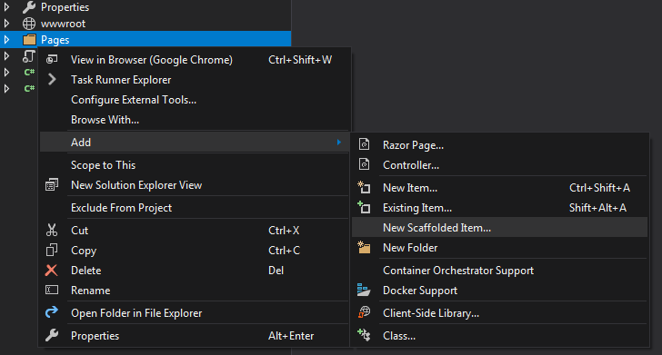

Scaffolding in ASP.NET Core is a technique used to generate code at design time to support a number of common application scenarios. The code generation tool is available as a Nuget package.
When working with Visual Studio, the package is installed automatically when you use the context menu to add new scaffolded items for the first time:

If you are using Visual Studio Code, or another development tool that doesn't provide scaffolding integration, you can invoke the tool and execute commands from a command prompt or terminal. First, you need to install the scaffolding tool, which you do as a global tool with the following command:
dotnet tool install --global dotnet-aspnet-codegenerator --version 2.1.6
The version number is required until this issue at https://github.com/dotnet/cli/issues/10459 is fixed
Then execute the following command from the directory that contains your project's .csproj file:
dotnet add package Microsoft.VisualStudio.Web.CodeGeneration.Design
This adds the following reference (version number may be different):
<PackageReference Include="Microsoft.VisualStudio.Web.CodeGeneration.Design" Version="2.2.0" />
The scaffolding tool is invoked by using its command, which is dotnet-aspnet-codegenerator. The tool features a number of generators including ones for producing MVC areas, controllers and views, and Razor Pages. A number of templates exist for Razor Pages:
Template Options
| Template | Description |
|---|---|
Empty |
Generates a Razor Page with no markup in the HTML body element, and an empty OnGet handler in the PageModel class |
Create |
Generates a Razor Page with a form for creating the specified model class, and PageModel handlers complete with code for saving to a database |
Edit |
Generates a Razor Page with a form for editing the specified model class, and PageModel handlers complete with code for retrieving the specified entity and saving changes to a database |
Delete |
Produces a page that displays details of the selected entity, and a form with a hidden field that |
Details |
Produces a page that displays details of the selected entity |
List |
Produces a page that displays details of all instances of the selected entity in a table |
The generator for Razor Pages is invoked using the razorpage argument with the following options:
Generator Options
| Option | Abbreviation | Description |
|---|---|---|
--model |
-m |
Model class to use. This is required for all templates except the Empty template |
--dataContext |
-dc |
DbContext class to use for any template except the Empty template |
--referenceScriptLibraries |
-scripts |
Switch to specify whether to reference validation script libraries in the generated pages |
--layout |
-l |
Custom Layout page to use |
--useDefaultLayout |
-udl |
Switch to specify that default layout should be used for the pages. If this is not specified, the layout is set to null in the generated page unless the --layout switch is used |
--force |
-f |
Use this option to re-scaffold by overwriting existing files |
--relativeFolderPath |
-outDir |
Specify the relative output folder path from project where the file needs to be generated. If not specified, file will be generated in the project folder |
--namespaceName |
-namespace |
Specify the name of the namespace to use for the generated PageModel. |
--partialView |
-partial |
Generate a partial page, other layout options (-l and -udl) are ignored if this is specified |
--noPageModel |
-npm |
Switch to not generate a PageModel class for Empty template |
Examples
Generating CRUD pages for an entity
If you don't specify a template or page name, the scaffolder will generate pages from the Create, Edit, Delete, Details and List templates for the specified entity. The following will generate these pages in the Pages/Product folder, creating the Product folder if it doesn't already exist:
dotnet-aspnet-codegenerator razorpage -m Product -dc MyContext -outDir Pages\Product -udl -scripts
The pages will use the layout specified in any _ViewStart file that applies to that directory. They will also include a partial tag helper that references the _ValidationScriptsPartial file:
@section Scripts {
@{await Html.RenderPartialAsync("_ValidationScriptsPartial");}
}
Generating a Create page for an entity
The next example shows how to generate a Create page for an entity that includes validation scripts but uses a custom layout file:
dotnet-aspnet-codegenerator razorpage Create Create -m Product -dc BakeryContext -outDir Pages\Product -l Pages\Shared\_CustomLayout.cshtml -scripts
Generating a page using the Empty template
dotnet-aspnet-codegenerator razorpage Empty Empty -outDir Pages\Product